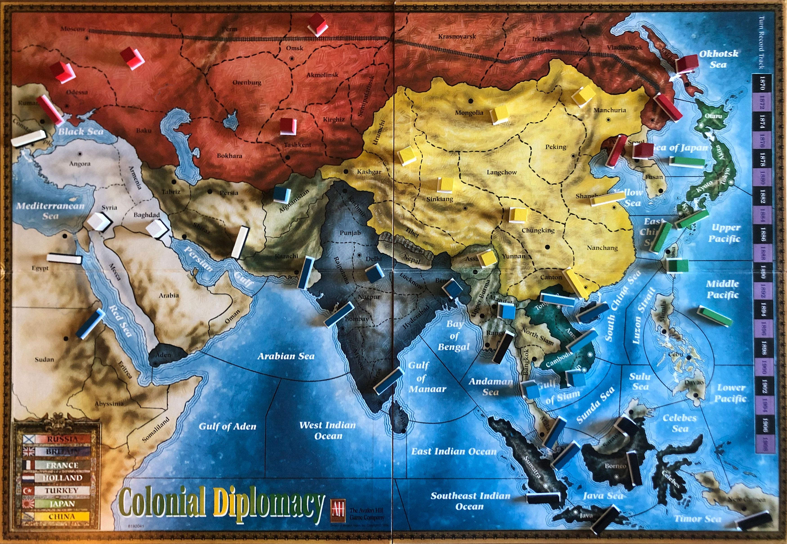
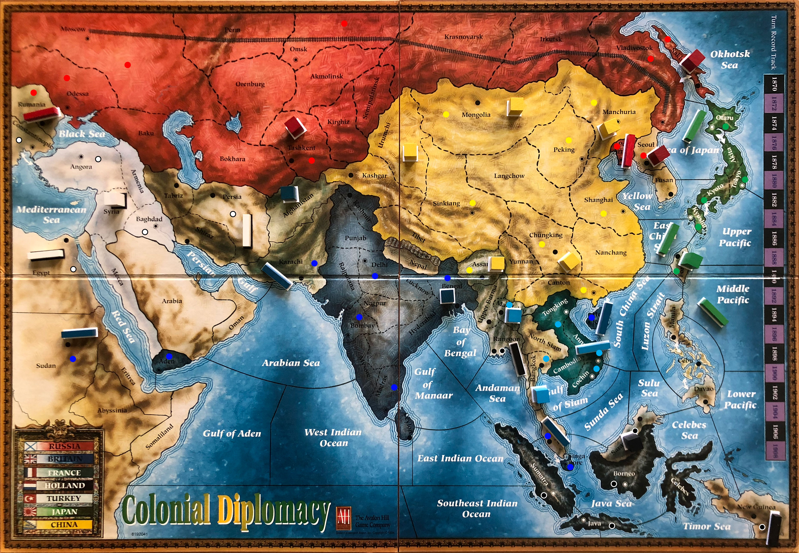
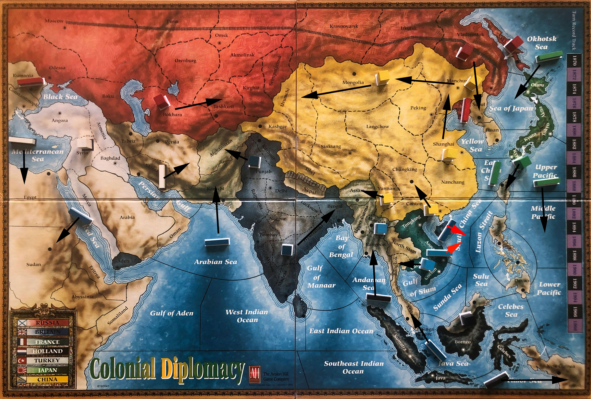

1874

1873

Britain (+4)
F(Singapore)
F(Madras)
F(Bombay)
A(Delhi)
China (+3)
F SHA
F CAN
A SIK
France (+2)
F TON
A COC
Holland (+3)
F BORNEO
F JAVA
F SUMATRA
Japan (+1)
F KYU
Russia (+4)
A Ode
A Mos
A Omsk
F Vla
Turkey (+2)
F Con
A Bag
1872

Britain
F(Red Sea) : Sudan
F(Hong Kong) : South China Sea
F(Java Sea) : Malaya
F(Arabian Sea) : Karachi
A(Punjab) : Afghanistan
A(Hyderabad) : Bengal
China
A MAC – MON
A MON – URU
A SHA – MAC
A CAN – CHU
A YUN – ASS
France
A Cam-Ban
A May H
F Ann-SCS
Holland
F TIMOR SEA - NEW GUINEA
F ANDAMAN SEA - RANGOON
A SAR H
Japan
F OS - SOJ
F ESC C A KYU-FOR
F UP - MP
A KYU-FOR
Russia
A Bok -> Tas
A Sak H
F Rum H
A Vla -> Seo
F P.Art S Vla -> Seo
Turkey
F MED - Egy
A Syr S F MED - Egy
F Shi - Per
1870

Britain
F(Aden) : Red Sea
A(Delhi) : Punjab
F(Bombay) : Arabian Sea
A(Madras) : Hyderabad
F(Hong Kong) : South China Sea
F(Singapore) : Java Sea
China
A MAC H
A PEK – MON
A SHA S A MAC H
A CAN H
A SIK – YUN
France
A Ton-Man
F Ann-SCS
A Coc-Cam
Holland
F JAVA - TS
A BOR - SAR
F SUM - AS
Japan
F Ota-OS
F Kyu-Ecs
F Tok-Up
A Kyo-Kyu
Russia
F Ode -> Rum
A Mos -> Bok
A Vla -> Sak
A Omsk -> TSR -> Vla
F P.Art H
Turkey
F Con - MED
A Ang - Syr
F Bag - Shi